MODIS Deep Blue aerosol trend analysis
This page summarizes a first-pass analysis of the long-term MODIS Deep Blue total aerosol optical depth record and the unusually low recent AOD values in the local production-freeze Level-3 data archive.
The original objective of this project is to estimate dust aerosol optical depth from MODIS Deep Blue Level-2 aerosol retrievals using machine-learning methods trained with AERONET nonsphericity-based dust information. During production analysis of the full Terra and Aqua MODIS Deep Blue record, the global total AOD time series showed an unexpectedly strong decline in the most recent years, especially in 2025.
This webpage collects the diagnostic figures used to evaluate that behavior. The analysis asks three practical questions: whether the recent low AOD is visible in the annual global mean, whether it is spatially coherent or concentrated in a few regions, and whether an aerosol reanalysis such as NASA MERRA-2 shows similar regional behavior.
2025 global total-AOD anomaly relative to the 2008-2017 reference mean.
2024-2025 mean total AOD minus the 2003-2019 mean over the MODIS DB valid domain.
Area fraction with significant 2024-2025 total-AOD change at p < 0.05 in a simple grid-cell t test.
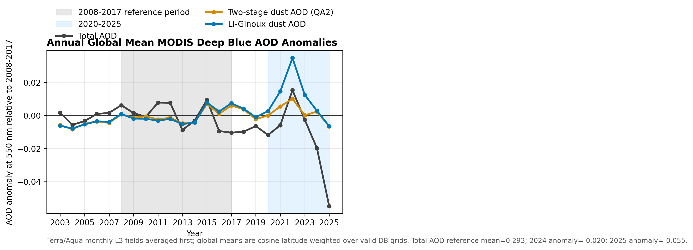
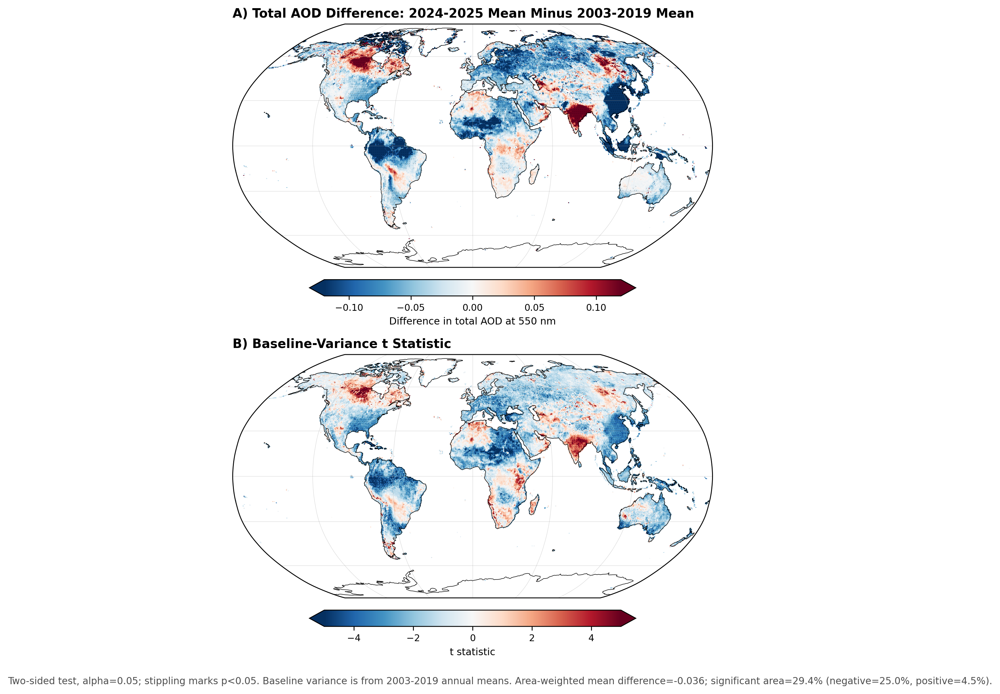
| Metric | Value | Interpretation |
|---|---|---|
| 2003-2019 total AOD mean | 0.2957 | Baseline mean over the MODIS DB valid retrieval domain. |
| 2024-2025 total AOD mean | 0.2583 | Recent two-year mean over the same domain. |
| 2024-2025 minus 2003-2019 | −0.0361 | Large negative anomaly relative to the baseline period. |
| Significant negative area | 25.0% | Most significant changes are decreases, not increases. |
Added June 28, 2026 UTC. This update keeps the earlier 2024-2025 two-year analysis above, but adds a
stricter single-year diagnostic using 2025 alone as the target year. It also compares the result with
the operational 1 x 1 degree monthly MODIS products (MOD08_M3 and MYD08_M3).
The single-year analysis strengthens the qualitative conclusion: 2025 is the minimum-AOD year in the 2003-2025 MODIS record analyzed here. In the production-freeze Level-2-derived Deep Blue archive, the 2025 global mean total AOD is 0.241, compared with 0.294 for the 2003-2019 baseline. This is a decrease of 0.053 AOD units, or about 18%. Relative to the 2003-2019 interannual variability, the global anomaly corresponds to a z score of -8.05 and a simple two-sided p value of 7.35 x 10-7.
Production-freeze Terra/Aqua Deep Blue total AOD over the stable valid DB domain.
2025 minus the 2003-2019 baseline mean.
2025 is the lowest annual global mean AOD year in 2003-2025.
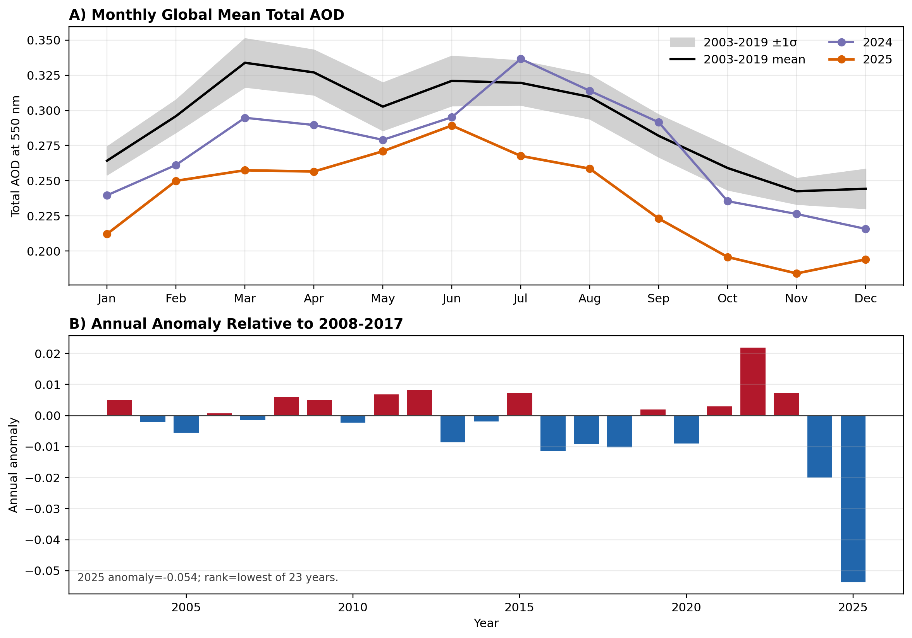
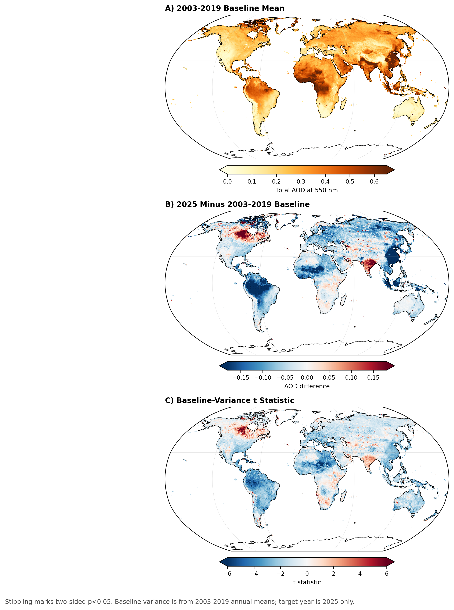
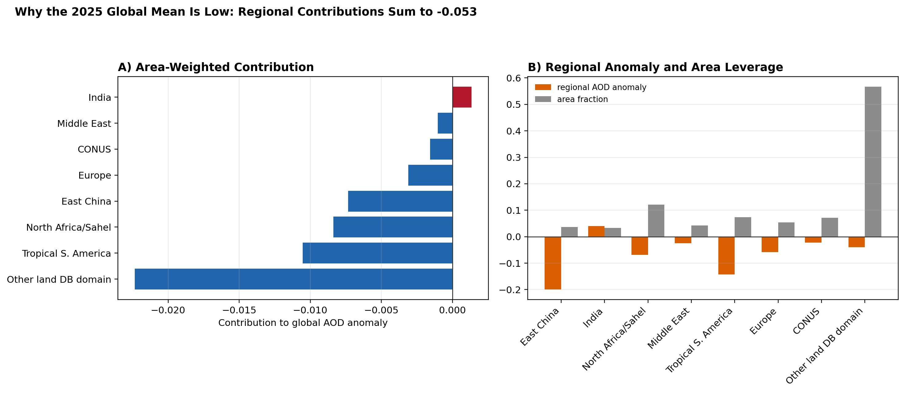
| Region | Regional anomaly in 2025 | Contribution to global anomaly |
|---|---|---|
| Other land DB domain | −0.039 | −0.0223 |
| Tropical South America | −0.143 | −0.0105 |
| North Africa/Sahel | −0.069 | −0.0084 |
| East China | −0.200 | −0.0073 |
| Europe | −0.058 | −0.0031 |
| CONUS | −0.022 | −0.0016 |
| Middle East | −0.024 | −0.0010 |
| India | +0.040 | +0.0013 |
To test whether the low 2025 AOD is specific to the local Level-2 production workflow, we also analyzed
the operational monthly MODIS atmosphere products, MOD08_M3 and MYD08_M3. These
products provide 1 x 1 degree monthly statistics from the official Level-3 processing chain. The quick
check extracted Dark Target land/ocean AOD, Dark Target land QA-weighted AOD, Deep Blue land AOD, and the
operational Dark Target + Deep Blue combined AOD.
The operational M3 products should not be treated as identical to the production-freeze Level-2-derived archive. Their absolute AOD values differ because the gridding, daily/monthly statistics, QA weighting, and valid sampling domain are different. However, the key qualitative result is robust: 2025 is also the lowest year in all four operational M3 AOD fields examined.
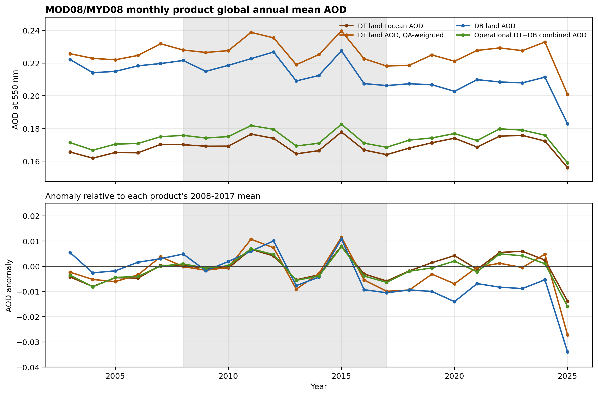
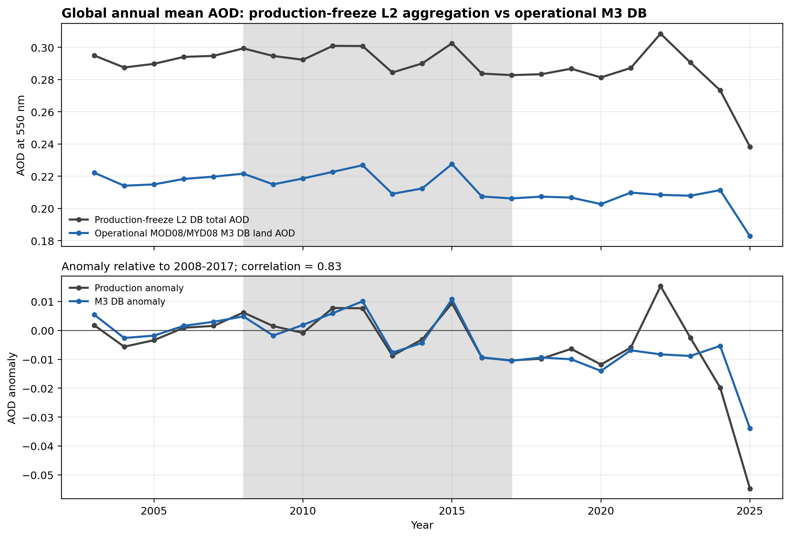
| Operational M3 field | 2008-2017 mean | 2025 AOD | 2025 anomaly | Rank |
|---|---|---|---|---|
| Dark Target land+ocean AOD | 0.1698 | 0.1560 | −0.0138 | lowest |
| Dark Target land QA-weighted AOD | 0.2281 | 0.2009 | −0.0272 | lowest |
| Deep Blue land AOD | 0.2167 | 0.1828 | −0.0340 | lowest |
| Dark Target + Deep Blue combined AOD | 0.1748 | 0.1589 | −0.0160 | lowest |
The global time series alone is not enough to explain the behavior. East China began declining much earlier, but the global mean remained relatively stable because other regions compensated. The recent global drop occurs when multiple high-leverage regions are simultaneously below their earlier baselines.
The strongest defensible statement is: the 2024-2025 global total-AOD minimum reflects concurrent negative anomalies across East China, tropical South America, North Africa/Sahel, Europe, CONUS, and the broader residual land domain, with only small positive compensation from India.
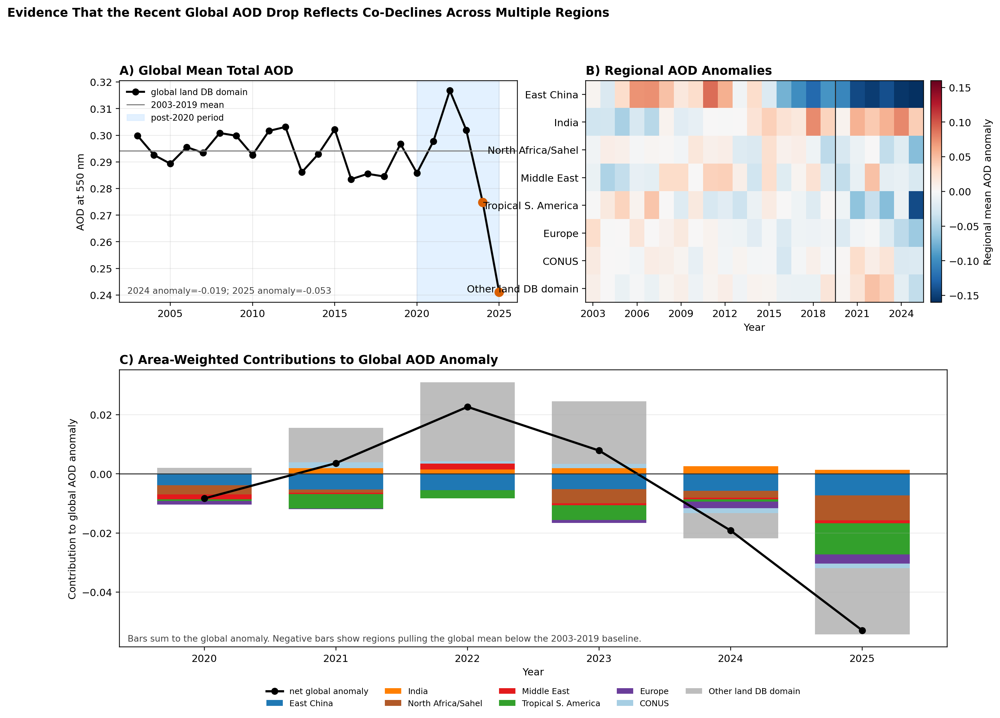
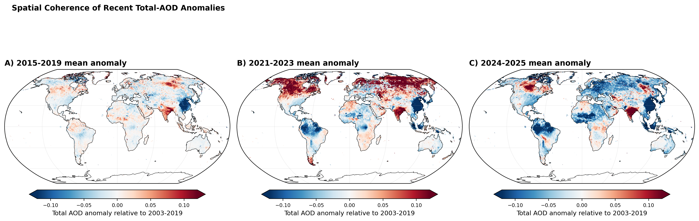
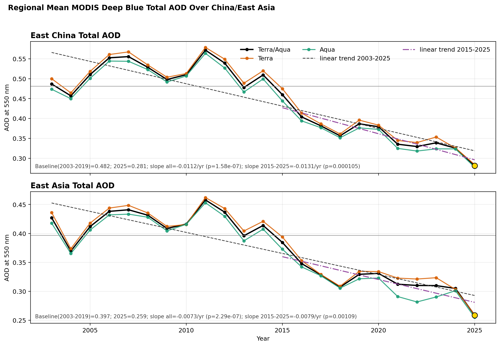
| Region | Mean regional anomaly, 2024-2025 | Mean contribution to global anomaly |
|---|---|---|
| East China | −0.178 | −0.0065 |
| Tropical South America | −0.076 | −0.0056 |
| North Africa/Sahel | −0.044 | −0.0054 |
| Europe | −0.050 | −0.0027 |
| CONUS | −0.023 | −0.0016 |
| India | +0.058 | +0.0020 |
NASA MERRA-2 monthly aerosol diagnostics provide a useful comparison dataset, although they are not a
fully independent validation because the reanalysis assimilates satellite aerosol information. Here we
use the monthly MERRA-2 aerosol product, M2TMNXAER v5.12.4, focusing on total aerosol
extinction AOT at 550 nm (TOTEXTTAU) and dust extinction AOT at 550 nm (DUEXTTAU).
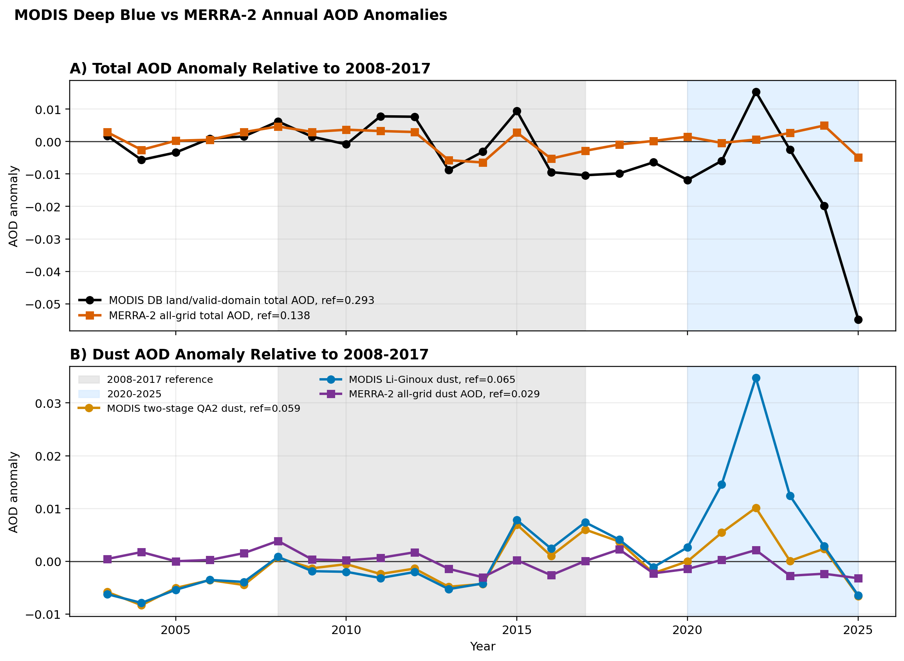
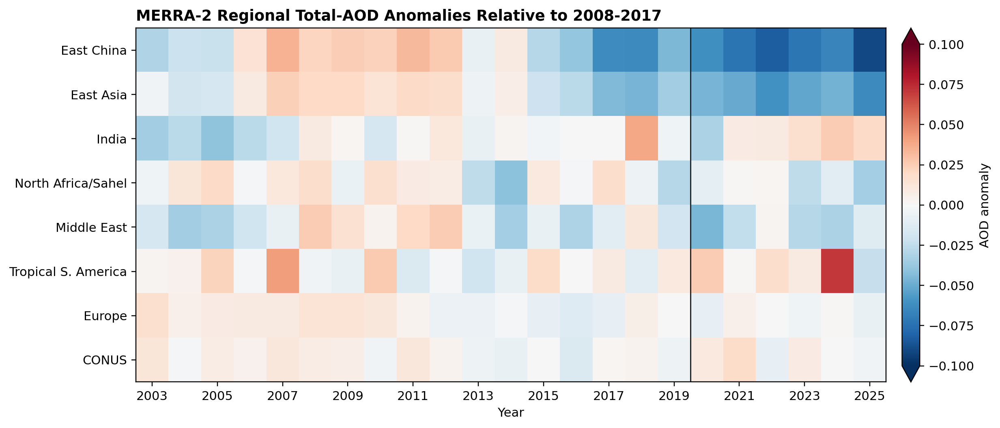
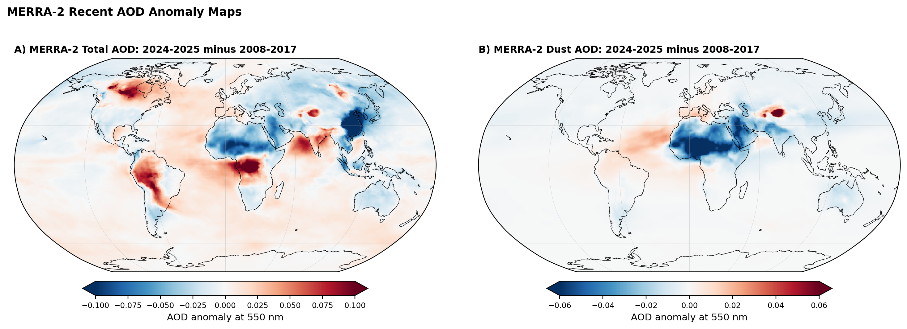
| MERRA-2 region | Total AOD anomaly, 2024-2025 | Total AOD anomaly, 2025 | Dust AOD anomaly, 2024-2025 |
|---|---|---|---|
| Global all-grid | +0.000 | −0.0049 | −0.0028 |
| East China | −0.078 | −0.090 | −0.0082 |
| East Asia | −0.055 | −0.063 | −0.0072 |
| North Africa/Sahel | −0.022 | −0.034 | −0.0325 |
| Middle East | −0.022 | −0.012 | −0.0276 |
| India | +0.022 | +0.019 | −0.0109 |
The MODIS results are from the local production_freeze_v1 Level-3 archive derived from
Terra MOD04_L2 and Aqua MYD04_L2 Deep Blue Level-2 products. The archive
contains daily and monthly gridded fields at 0.5 x 0.5 degree resolution for 2003-2025.
Total AOD comes from the Deep Blue product. Dust AOD is estimated using the two-stage XGBoost method and the Li-Ginoux parameterization with the Angstrom-exponent/fine-mode-fraction screen used in the production-freeze workflow.
Most anomaly plots use 2008-2017 as a reference period. The significance map compares the 2024-2025 mean against the 2003-2019 baseline distribution at each grid cell using a simple two-sided t-test style statistic based on baseline interannual variability.
This test is diagnostic, not a final detection-and-attribution analysis. It does not correct for autocorrelation, sampling changes, or possible instrument and retrieval changes.
The full Level-3 production archive is not included in this web folder. This page only includes selected figures and compact CSV summaries.
Analysis scripts are located in the repository root, including
plot_global_mean_aod_annual_anomaly_2008_2017.py,
plot_total_aod_recent_minus_baseline_significance.py,
plot_global_aod_decline_regional_decomposition.py,
process_merra2_monthly_aod_trends.py, and
plot_merra2_modis_aod_comparison.py. The June 28 update also uses
process_modis_m3_dt_db_aod.py, plot_modis_m3_dt_db_quicklook.py, and
analyze_total_aod_2025_single_year_anomaly.py.